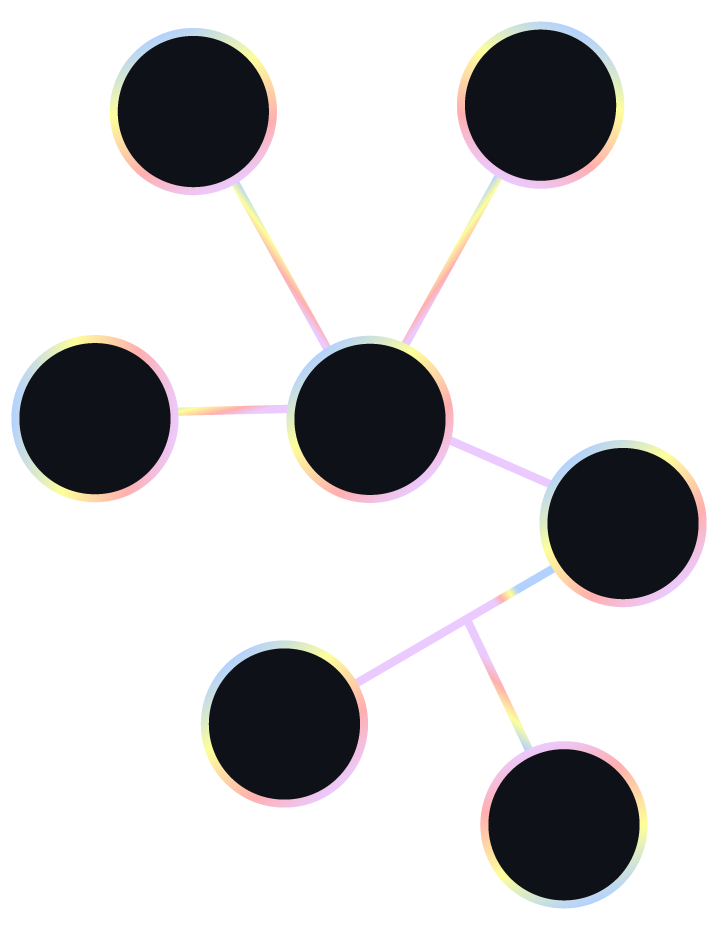

Disrupting the AI-driven drug design industry. Developing agentic pipelines to predict the probability of success for clinical trials before they even start—an event that costs hundreds of millions to execute, fails 90% of the time, but generates trillions per year in revenue if successful. Building pure-ML and ML-Physics hybrid models to redefine in-silico drug activity prediction.

Built and led the elite AI team solving the notoriously complex analog chip design problem. Created state-of-the-art agentic pipelines combining LLMs with industry-standard simulations, prototyping GenAI-aided search, optimization algorithms, and Graph-prompted Diffusion models for optimal circuit layout.
Led a diverse group of elite Data Scientists to conquer enzyme and protein engineering at an unprecedented scale. Deployed cutting-edge multi-objective optimization algorithms and crafted ML-Physics hybrid models capable of mapping complex protein activity landscapes.
Conceptualized and redefined drug design as an AI-aided optimization problem. Developed proprietary optimization algorithms and Graph Neural Networks (GNNs) capable of navigating the multi-objective constraints of molecular design for massive scale computational discovery.
Spearheaded the core AI framework underlying the company's main value proposition for the Oil & Gas industry. Productized a massive-scale optimization framework utilizing Evolutionary Algorithms, PCA, and gradient-based methods. The company's groundbreaking tech led to its strategic acquisition by SLB (Schlumberger).
Led optimization initiatives across Austria, Germany, and Switzerland for one of the world's largest suppliers of electromechanical equipment for hydropower plants. Deployed an industrial-scale optimization platform developed during my PhD, managing high-stakes collaboratory projects with top universities.

Modern molecular manufacturing is limited in the products that can be built. Using catalysis by enzymes is often a preferred way to overcome these challenges. Every enzyme can catalyze thousands of diverse new-to-nature reactions, however, existing technologies test enzymes against only a few reactions at a time. Aether Biomachines is building a platform that enables indexing millions of possible enzyme-substrate reactions and optimization of reactions that are discovered throughout the process. Aether’s automated platform enables building thousands of variants, running miniaturized enzymatic experiments on high density plates to reduce per sample cost, and parallel detection of substrates-products combinations via mass spectrometry to maximize data rate per chip. Aether’s platform enables us to generate data at a scale and diversity that unlocks an unprecedented capacity to index reaction space.
Aether’s predictive models, trained on the aforementioned diverse datasets, learn the reaction space and, in combination with search and optimization algorithms, can algorithmically mine it. With those learnings comes the ability to propose enzymes performing desired reactions even if they have not been observed. Aether’s predictive models are hybrid physics/ML systems. The model's architecture is a message passing neural network where the graph embedding of the active site is featurized as a set of nodes (atoms) connected by edges (representing chemical bonds or enzyme-substrate interactions). Graph level features such as stability, accessibility and numerous descriptors are also included before the final deep dense part of the model.
The aforementioned strategy is demonstrated through a case study targeting a molecule with antiviral activity. The model’s ability to locate never seen before reactions will be quantified by the area under the True-Positive-Rate vs False-Positive-Rate curve for reactions intentionally hidden from their training set.
With growing worldwide consensus about the impacts of climate change, the oil and gas industry faces unprecedented pressure to minimize its carbon footprint. The biggest source of carbon emissions in the industry is the so-called fugitive emissions, accounting for ~57% of the total oil and gas industry emissions, resulting from leaks in oil and gas pipelines and facilities. Fast, accurate and economic prediction of leaks in pipelines would significantly reduce fugitive emissions by reducing the time to respond to a leak.
Data Physics reservoir modeling and optimization was described in detail in a prior paper (SPE-185507) and can be conceptualized as a physics-based model augmented by machine learning. In brief, the production, injection, temperature, steam quality, completion and other engineering data from an active steamflood are continuously assimilated into the Data Physics model using an Ensemble Kalman Filter (EnKF), which is then used to optimize steam injection rates to maximize/minimize multiple objectives such as net present value (NPV), injection cost etc. using large scale evolutionary optimization algorithms. The solutions are low-order and continuous scale, rather than discretized, therefore modeling, forecasting and optimization are significantly faster than traditional simulation.
The application of a novel modeling and optimization approach is presented, demonstrating the impact of quantitatively optimized steam redistribution in mature heavy oil fields. Results are presented for a steamflood in the San Joaquin Basin in California, demonstrating significant savings of steam and operational costs and significant production increase, ultimately increasing net present value (NPV) by at least 10%.
A cloud-distributed optimization algorithm applicable to large scale, constrained, multiobjective, optimization problems, such as steamflood redistribution, is presented. The proposed algorithm utilizes the so-called Metamodel Assisted Evolutionary Algorithm (MAEA) as its algorithmic basis. MAEAs use a generic implementation of an evolutionary algorithm as their main optimization engine and advanced machine learning techniques as metamodels. Metamodels are utilized through the application of an inexact pre-evaluation phase during the optimization, which substantially decreases the evaluations of the problem specific forward model. Additionally, a unification of global search (GS) and local search (LS) is achieved via the use of Lamarckian learning principles applied on top of a MAEA creating, in essence, a Metamodel Assisted Memetic Algorithm (MAMA). MAMAs profit from the abilities of MAEAs to …
The application of a novel modeling and data assimilation approach is presented, demonstrating the impact of quantitatively modeled and optimized cyclic steam candidate and steam volume selection in a mature heavy oil field. Results are reviewed for a cyclic steam operation in the San Joaquin Basin in California, including steam savings, production increases and SOR reduction in excess of 20 percent.
This paper deals with evolutionary algorithms (EAs) assisted by surrogate evaluation models or metamodels (metamodel-assisted EAs, MAEAs) which are further accelerated by exploiting the principal component analysis (PCA) of the elite members of the evolving population. In each generation of the MAEA, PCA is used to (a) better guide the application of evolution operators and (b) train metamodels, in the form of radial basis functions networks, on patterns of smaller dimension. Note that the present MAEA relies upon “local” metamodels which are trained on-line, separately for each and every population member. Compared to previous works by the same authors, this paper proposes a new way to apply the PCA technique. In particular, the front of non-dominated solutions is divided into sub-fronts and the PCA is applied “locally” to each sub-front. The proposed method is demonstrated in multi-objective …
This article presents the development and application of the continuous adjoint method for designing/optimizing the shape of hydraulic turbomachines. The Reynolds-averaged flow equations are solved in the rotating reference frame and the terms arising from the differentiation of the Coriolis and centripetal forces are taken into account in the formulation of the adjoint equations. The objective functions presented in this article can be used for achieving (a) the optimal collaboration of the runner impeller with the draft tube, by controlling the meridional and circumferential velocity profiles at the exit of the runner, (b) the operation at the desired hydraulic head and/or (c) the cavitation suppression. All of them are used to improve an existing Francis runner. It is important to note that the objective function related to cavitation is, by definition, non-differentiable and a way to effectively handle it, is proposed. The continuous …
This article presents methods to enhance the efficiency of Evolutionary Algorithms (EAs), particularly those assisted by surrogate evaluation models or metamodels. The gain in efficiency becomes important in applications related to industrial optimization problems with a great number of design variables. The development is based on the principal components analysis of the elite members of the evolving EA population, the outcome of which is used to guide the application of evolution operators and/or train dependable metamodels/artificial neural networks by reducing the number of sensory units. Regarding the latter, the metamodels are trained with less computing cost and yield more relevant objective function predictions. The proposed methods are applied to constrained, single- and two-objective optimization of thermal and hydraulic turbomachines.
The draft tube design of a hydraulic turbine, particularly in low to medium head applications, plays an important role in determining the efficiency and power characteristics of the overall machine, since an important proportion of the available energy, being in kinetic form leaving the runner, needs to be recovered by the draft tube into static head. For large units, these efficiency and power characteristics can equate to large sums of money when considering the anticipated selling price of the energy produced over the machine's life-cycle. This same draft tube design is also a key factor in determining the overall civil costs of the powerhouse, primarily in excavation and concreting, which can amount to similar orders of magnitude as the price of the energy produced. Therefore, there is a need to find the optimum compromise between these two conflicting requirements. In this paper, an elaborate approach is described for …
An efficient hydraulic optimization procedure, suitable for industrial use, requires an advanced optimization tool (EASY software), a fast solver (block coupled CFD) and a flexible geometry generation tool. EASY optimization software is a PCA-driven metamodel-assisted Evolutionary Algorithm (MAEA (PCA)) that can be used in both single- (SOO) and multiobjective optimization (MOO) problems. In MAEAs, low cost surrogate evaluation models are used to screen out non-promising individuals during the evolution and exclude them from the expensive, problem specific evaluation, here the solution of Navier-Stokes equations. For additional reduction of the optimization CPU cost, the PCA technique is used to identify dependences among the design variables and to exploit them in order to efficiently drive the application of the evolution operators. To further enhance the hydraulic optimization procedure, a very robust …
Σκοπός της διδακτορικής διατριβής είναι να εμπλουτίσει και να επεκτείνει υπάρχουσες μεθόδους (και λογισμικό) βελτιστοποίησης το οποίο βασίζεται στους εξελικτικούς αλγορίθμους (ΕΑ). Στόχος του νέου λογισμικού είναι, όταν αυτό χρησιμοποιείται σε πραγματικά μεγάλης κλίμακας προβλήματα της βιομηχανίας, να μειώνεται σημαντικά ο χρόνος ολοκλήρωσης του έργου, κάνοντας τη διαδικασία σχεδιασμού-βελτιστοποίησης ελκυστική για χρήση σε βιομηχανικό περιβάλλον. Οι προτεινόμενες μέθοδοι και το προγραμματισθέν λογισμικό εφαρμόζονται σε ένα φάσμα εφαρμογών σχεδιασμού-βελτιστοποίησης στις στροβιλομηχανές, θερμικές και υδροδυναμικές, οι περισσότερες από τις οποίες είναι βιομηχανικού ενδιαφέροντος.
To overcome the excessive CPU cost of evolutionary algorithms (EAs) which make use of demanding evaluation models, metamodel-assisted EAs (MAEAs) have been devised and used in either single-objective (SOO) or multi-objective (MOO) problems. MAEAs are based on low-cost surrogate evaluation models that screen out non-promising individuals during the evolution and exclude them from the expensive, problem-specific evaluation. This paper proposes a new technique that further reduces the computational cost of MAEAs. This technique is based on the principal-component-analysis (PCA) of the non-dominated individuals (in MOO) within each generation, to identify dependences among the design variables and, through appropriate rotations, use this piece of information to efficiently ‘drive’ the application of the evolution operators. The proposed technique is used to perform the multi-operating point …
The shape optimization of a Hydromatrix® turbine runner using an asynchronous metamodelassisted evolutionary algorithm is presented. The optimization problem is subject to constraints and is computationally demanding, since candidate runner geometries are evaluated by means of calls to a CFD code. The use of an asynchronous, rather than a conventional (synchronous or generation-based) evolutionary algorithm, aims at maximizing the parallel performance of the design process on any system of interconnected (likely, heterogeneous) processors and minimizing the turnaround optimization time. On the other hand, the use of metamodels contributes to a noticeable reduction of the computational cost, since the costly CFD evaluations are restricted only to promising solutions. The design is performed at three operating points (the best efficiency point, one part-and one full-load points); the quality of candidate runner shapes is quantified by postprocessing the computed pressure coefficient distribution over the blades, the computed outlet mass flow and swirl profiles and also in terms of the cavitation index, resulting thus to three objective functions to be minimized. Results are presented in the form of a Pareto front in the 3D objective function space.
A design-optimization method for hydraulic machinery is proposed. Optimal designs are obtained using the appropriate CFD evaluation software driven by an evolutionary algorithm which is also assisted by artificial neural networks used as surrogate evaluation models or metamodels. As shown in a previous IAHR paper by the same authors, such an optimization method substantially reduces the CPU cost, since the metamodels can discard numerous non-promising candidate solutions generated during the evolution, at almost negligible CPU cost, without evaluating them by means of the costly CFD tool. The present paper extends the optimization method of the previous paper by making it capable to accommodate and exploit pieces of useful information archived during previous relevant successful designs. So, instead of parameterizing the geometry of the hydraulic machine components, which inevitably leads …
In the companion paper, hierarchical metamodel-assisted evolutionary algorithms (HMAEAs) that are capable to efficiently solve costly optimization problems, were presented and demonstrated in design problems associate with a single operating point. In the present paper, the same optimization procedure is adapted to the design of optimal blades of Francis runners, in a multi-objective, multi-operating point way. At first, the industrial viewpoint of the design problem is presented, focusing on its main difficulties and possible approaches to solve it. The optimization targets, such as cavitation safety and desired load distributions along the blade from the leading to the trailing edge, are defined and brought in the form of objective functions. During the design, several geometrical and flow related constraints, concerning the pressure, mass and swirl profiles at the runner outlet, must be met. Emphasis is laid on the problem formulation of Francis and Kaplan runner blades, followed by comments on possible extension to Pelton turbines. A two-level optimization scheme is then set up and solved by employing a two-level HMAEA. On the low level, a low CPU cost exploration of the search space is carried out on a less accurate CFD tool, ie an Euler equations’ solver running on coarse grids. The high level utilizes a more accurate and CPU demanding simulation process, by focusing on the best performing areas of the design space identified and communicated by the low level.
This paper is concerned with optimization methods which, in combination with CFD-based analysis tools, can efficiently be used for the design-optimization of hydraulic turbine blades. It particularly focuses on metamodel-assisted evolutionary algorithms (MAEAs) used as either stand-alone tools or the main components of a hierarchical optimization algorithm (hierarchical MAEAs or HMAEAs). In a HMAEA, search is carried out on regularly communicating levels using models or search tools of different complexity and CPU cost; two levels are often sufficient though this is not mandatory. Additional economy in the CPU cost required to reach a successful design can be achieved by using surrogate evaluation models (the so-called metamodels) for the major part of search on each level. The metamodels exploit the “experience” gained during the evolution to approximately pre-evaluate new offspring generated by the EA and select the most promising among them for re-evaluation on the problem-specific tool. The metamodels used herein are radial basis function networks, trained on the fly on a small number of previously evaluated individuals in the vicinity of each offspring. Basic tuning parameters of a HMAEA are the parent and offspring population sizes per level, the minimum number of previously evaluated individuals that must be available prior to the metamodel-based pre-evaluations, the size of training pattern sets, the percentage of the population selected to undergo exact evaluation, the frequency of interlevel data migrations as well as the migration policy rules (determining the migrating individuals and the individuals to be displaced by …